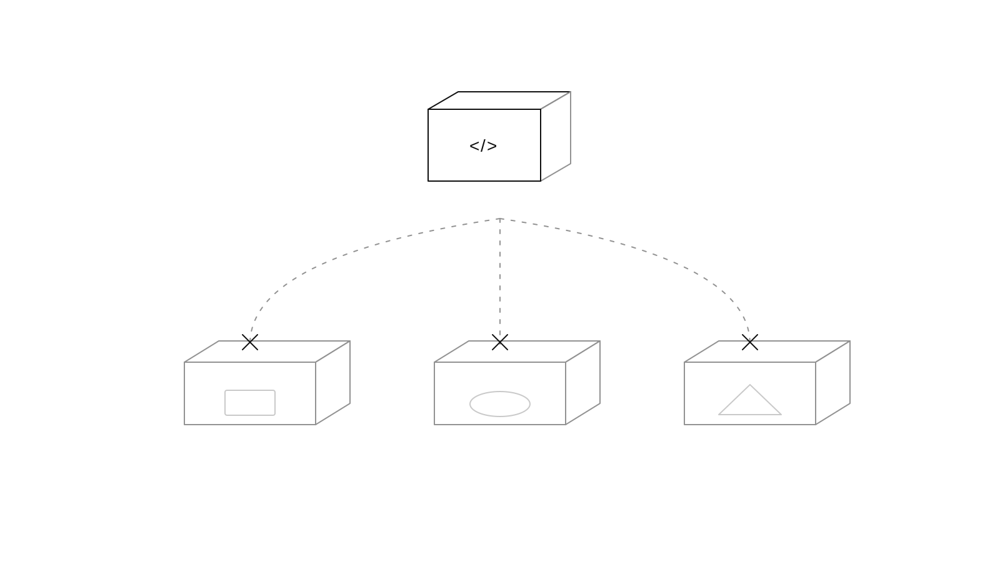
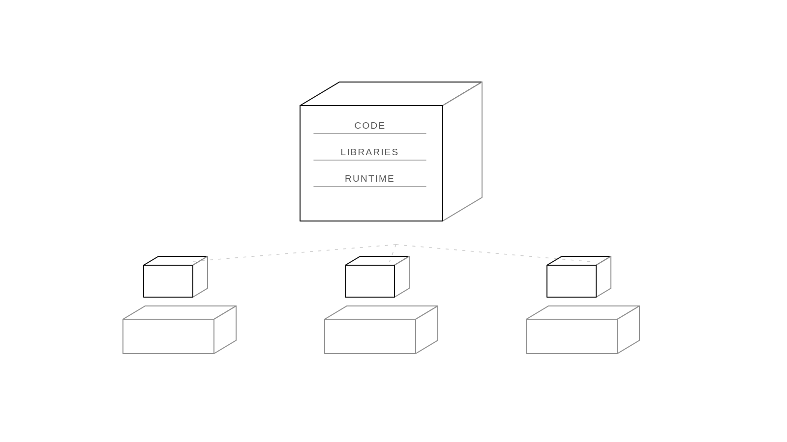
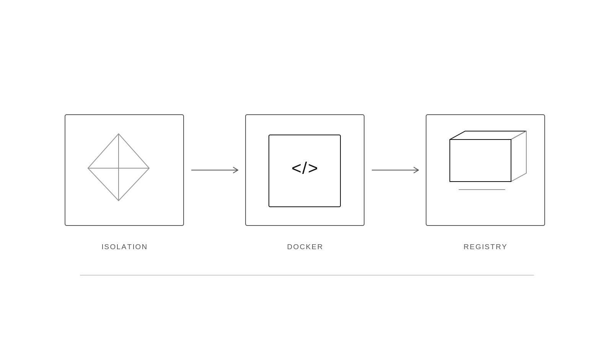
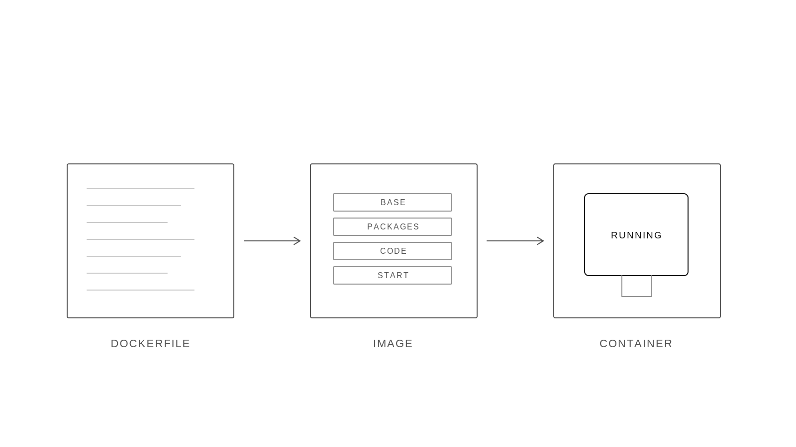
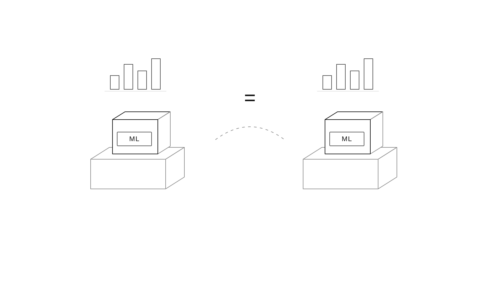
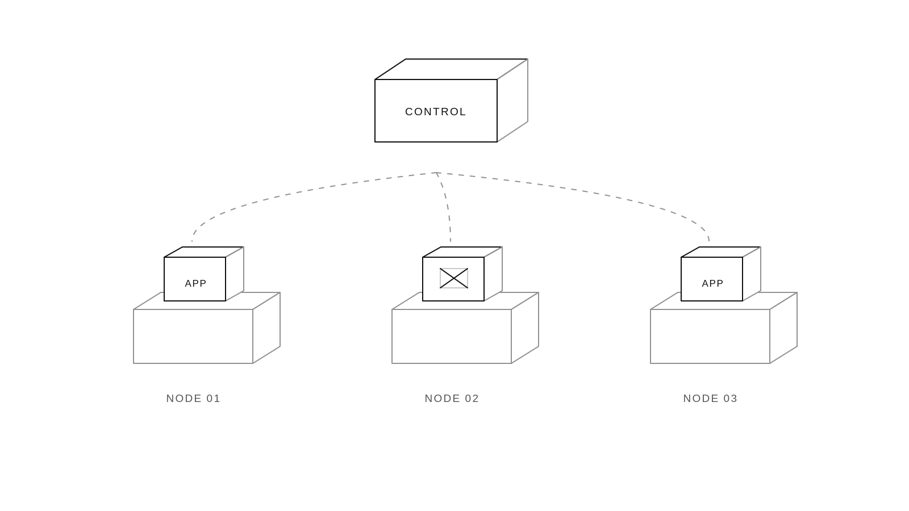

Containers
Software rarely stays on the machine it was written on, and every machine is set up differently.
Software is portable only when the environment around it is portable too.
Why the mismatch happens
An application depends on more than its source files. It depends on the operating system, language runtime, installed libraries, environment variables, file paths, and services that happen to be available on the machine where it runs.
- Code moves from your laptop to teammates, test servers and the cloud
- Each machine can have a different operating system, language version and libraries
- So code that works on one machine breaks on another: "it works on my machine"
- The bigger the system, the more pieces there are to break

Docker is a tool for building and running containers.
Docker packages an application with its code, libraries, settings, and start command so it can run the same way on another machine.
What Docker gives you
An image is the sealed package. A container is a running copy of that image, isolated from the rest of the machine while sharing its core operating-system kernel.
- The code, libraries, and settings travel together in one package
- A container is lightweight and isolated, so it starts faster than a full virtual machine
- The same package can move from development to production without setting up each machine by hand

Docker made containers easy to build, share, and run.
Docker's contribution was to turn operating-system isolation into a developer workflow that was simple to build, share, and run.
What changed
Linux already had namespaces, cgroups, and filesystem isolation. The hard part was making those capabilities understandable and repeatable for everyday application development. Docker connected them to a command line, a Dockerfile, images, and a registry.
- Linux already had ways to isolate programs, but they were complicated
- In 2013, Solomon Hykes released Docker as open source while at a company called dotCloud
- In 2014, Docker 1.0 and Docker Hub launched, and the company renamed itself Docker
- Today it's the standard way to package and ship software

Docker turns a Dockerfile into an image, then runs that image as a container.
The Docker workflow separates instructions, the reusable package they produce, and the running process created from that package.
Read the three stages
The Dockerfile is plain text and can live beside the source code. Docker turns it into an image made of cached layers. The Docker engine starts one or more containers from that image, each with its own runtime state.
- Dockerfile: a short text file listing the base system, libraries, code and start command
- Image: a sealed, shareable package built from the Dockerfile
- Container: a running copy of an image, isolated from the rest of the machine
- One image can run as many containers as you need

A working setup takes only a few lines.
The Dockerfile sets up Python, copies app.py, and runs it with CMD. Here, app.py contains print("Hello World").
FROM python:3.11-slim
WORKDIR /app
COPY requirements.txt .
RUN pip install -r requirements.txt
COPY . .
CMD ["python", "app.py"]Try it
Run them in order: build creates the image, run starts it, and ps checks what is running.
docker build -t my-app . | Builds and tags the image as my-app. | |
docker run -p 8000:8000 my-app | Starts my-app and maps port 8000. | |
docker ps | Shows the running containers. |
In data science, Docker makes results reproducible.
A data-science result is easier to trust when the code, libraries, system packages, and model-serving command can all be reproduced.
What reproducibility means here
Docker does not guarantee that a model is accurate. It records enough of the runtime environment that another person can rerun the same notebook or service with the same dependency versions and compare the result.
- The same library versions mean the same model results on any machine
- Teammates can run your notebook or model without setup problems
- The same container moves from experiment to production unchanged
- It's easy to try a new library version without breaking your main setup

With Kubernetes, containers scale to large systems.
Scaling means running more copies of a service while keeping traffic, health, and placement under control.
What orchestration adds
Kubernetes watches a desired state and compares it with what is actually running. It places containers on available machines, routes requests to healthy copies, restarts failed copies, and gradually replaces versions during an update.
- Need to handle more users? Run more copies of the same container
- Kubernetes manages containers across many machines
- It starts them, restarts any that fail, and spreads the load evenly
- Docker packages each service; Kubernetes runs them at scale

Docker turns "works on my machine" into "works on every machine."
The path from laptop to production becomes easier to reason about when packaging, execution, and scaling are separate steps.
What to remember
Docker packages an application with its environment. Containers make that package runnable and repeatable. Kubernetes coordinates many containers so a service can keep operating as demand and machine health change.
- Software has to run on many machines, and different setups break it
- Docker packages the app with its environment, so it runs the same everywhere
- Kubernetes takes those containers and scales them across large systems
- Takeaway: if your project will ever leave your laptop, put it in a container